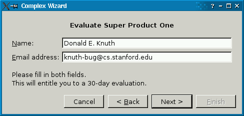
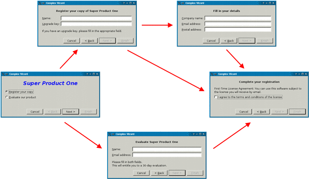

| Home · All Classes · Main Classes · Grouped Classes · Modules · Functions |
Files:
The Complex Wizard example shows how to implement complex wizards in Qt.
A wizard is a special type of input dialog that consists of a sequence of dialog pages. A wizard's purpose is to walk the user through a process step by step. Wizards are useful for complex or infrequently occurring tasks that users may find difficult to learn or do.

Most wizards have a linear structure, with step 1 followed by step 2 and so on until the last step. The Simple Wizard example shows how to create such wizards.
Some wizards are more complex in that they allow different traversal paths based on the information provided by the user. The Complex Wizard example illustrates this. It provides five wizard pages; depending on which options are selected, the user can reach different pages.

The example consists of the following classes:
The WizardPage class is the base class for the wizard pages. It inherits from QWidget and provides a few functions that are called by ComplexWizard. Here's the class definition:
class WizardPage : public QWidget
{
Q_OBJECT
public:
WizardPage(QWidget *parent = 0);
virtual void resetPage();
virtual WizardPage *nextPage();
virtual bool isLastPage();
virtual bool isComplete();
signals:
void completeStateChanged();
};
Subclasses can reimplement the virtual functions to refine the behavior of the class:
Subclasses are also expected to emit the completeStateChanged() signal whenever the isComplete() state changes.
WizardPage provides default implementations of the virtual functions:
WizardPage::WizardPage(QWidget *parent)
: QWidget(parent)
{
hide();
}
void WizardPage::resetPage()
{
}
WizardPage *WizardPage::nextPage()
{
return 0;
}
bool WizardPage::isLastPage()
{
return false;
}
bool WizardPage::isComplete()
{
return true;
}
ComplexWizard offers a Cancel, a Back, a Next, and a Finish button. It takes care of enabling and disabling the buttons as the user advances through the pages. For example, if the user is viewing the first page, Back and Finish are disabled. It communicates with the pages through the four virtual functions declared in WizardPage.
Here's the class definition:
class ComplexWizard : public QDialog
{
Q_OBJECT
public:
ComplexWizard(QWidget *parent = 0);
QList<WizardPage *> historyPages() const { return history; }
protected:
void setFirstPage(WizardPage *page);
private slots:
void backButtonClicked();
void nextButtonClicked();
void completeStateChanged();
private:
void switchPage(WizardPage *oldPage);
QList<WizardPage *> history;
QPushButton *cancelButton;
QPushButton *backButton;
QPushButton *nextButton;
QPushButton *finishButton;
QHBoxLayout *buttonLayout;
QVBoxLayout *mainLayout;
};
The ComplexWizard class inherits QDialog. Subclasses must call setFirstPage() in their constructor to get things started.
The historyPages() function returns the traversal path taken so far by the user. This may be used by subclasses to find out which pages have been visited and which pages have been skipped. The current page is always last in the history. When the user presses Back, the previous page in the history list is retrieved so that the user can adjust their input when required.
First the constructor:
ComplexWizard::ComplexWizard(QWidget *parent)
: QDialog(parent)
{
cancelButton = new QPushButton(tr("Cancel"));
backButton = new QPushButton(tr("< &Back"));
nextButton = new QPushButton(tr("Next >"));
finishButton = new QPushButton(tr("&Finish"));
connect(cancelButton, SIGNAL(clicked()), this, SLOT(reject()));
connect(backButton, SIGNAL(clicked()), this, SLOT(backButtonClicked()));
connect(nextButton, SIGNAL(clicked()), this, SLOT(nextButtonClicked()));
connect(finishButton, SIGNAL(clicked()), this, SLOT(accept()));
buttonLayout = new QHBoxLayout;
buttonLayout->addStretch(1);
buttonLayout->addWidget(cancelButton);
buttonLayout->addWidget(backButton);
buttonLayout->addWidget(nextButton);
buttonLayout->addWidget(finishButton);
mainLayout = new QVBoxLayout;
mainLayout->addLayout(buttonLayout);
setLayout(mainLayout);
}
We start by creating the Cancel, Back, Next, and Finish buttons and connecting their clicked() signals to SimpleWizard slots. The accept() and reject() slots are inherited from QDialog; they close the dialog and set the dialog's return code to QDialog::Accepted or QDialog::Rejected. The backButtonClicked() and nextButtonClicked() are defined in ComplexWizard.
void ComplexWizard::setFirstPage(WizardPage *page)
{
page->resetPage();
history.append(page);
switchPage(0);
}
The setFirstPage() function is called by subclasses with the page that should be shown first. We call resetPage() to make sure that its fields are correctly initialized, we append it to the history, and we call switchPage() to make the current page visible (the last page in the history). The switchPage() function takes a pointer to the previously current page as argument; here, we pass a null pointer.
void ComplexWizard::backButtonClicked()
{
WizardPage *oldPage = history.takeLast();
oldPage->resetPage();
switchPage(oldPage);
}
When the user clicks Back, we remove the current page from the history and clear all its fields. We call switchPage() to make the last page in the history visible. The argument to switchPage() is a pointer to the previously current page, not the new current page.
void ComplexWizard::nextButtonClicked()
{
WizardPage *oldPage = history.last();
WizardPage *newPage = oldPage->nextPage();
newPage->resetPage();
history.append(newPage);
switchPage(oldPage);
}
When the user clicks Next, we call nextPage() on the current page to obtain the next page. We initialize the next page's fields, we append it to the history, and we call switchPage() to make it visible.
void ComplexWizard::completeStateChanged()
{
WizardPage *currentPage = history.last();
if (currentPage->isLastPage())
finishButton->setEnabled(currentPage->isComplete());
else
nextButton->setEnabled(currentPage->isComplete());
}
The completeStateChanged() slot is called whenever the current page emits the completeStateChanged() signal. Depending on the value of isComplete() and isFinalPage(), we enable or disable the Next or the Finish button.
void ComplexWizard::switchPage(WizardPage *oldPage)
{
if (oldPage) {
oldPage->hide();
mainLayout->removeWidget(oldPage);
disconnect(oldPage, SIGNAL(completeStateChanged()),
this, SLOT(completeStateChanged()));
}
The switchPage() function contains all the ugly logic for making a page the current page. We start by hiding the previously current page, remove it from the layout, and disconnect its completeStateChanged() signal.
Next, we add the new current page (the last page in the history) to the layout and we connect its completeStateChanged() to ComplexWizard's slot of the same name.
Then we must update the enabled state of the Back, Next, and Finish buttons. At the end, we call completeStateChanged() to reuse the logic we wrote earlier to enable or disable the Next or Finish buttons according to whether the current page is complete.
This completes the ComplexWizard class. The good news is that we can now use it to write any number of wizards, without having to worry about updating the state of the wizard buttons. The rest of the code implements a license wizard using ComplexWizard and WizardPage.
The LicenseWizardPage is a thin wrapper for WizardPage that provides a back pointer to the LicenseWizard:
class LicenseWizardPage : public WizardPage
{
public:
LicenseWizardPage(LicenseWizard *wizard)
: WizardPage(wizard), wizard(wizard) {}
protected:
LicenseWizard *wizard;
};
The LicenseWizard class derives from ComplexWizard and provides a five-page wizard that guides the user through the process of registering their copy of a fictitious software product. Here's the class definition:
class LicenseWizard : public ComplexWizard
{
public:
LicenseWizard(QWidget *parent = 0);
private:
TitlePage *titlePage;
EvaluatePage *evaluatePage;
RegisterPage *registerPage;
DetailsPage *detailsPage;
FinishPage *finishPage;
friend class DetailsPage;
friend class EvaluatePage;
friend class FinishPage;
friend class RegisterPage;
friend class TitlePage;
};
The class's public API is limited to a constructor. More interesting is the private API: It consists of a pointer to each page, and makes each page a friend of the class. This will make it possible for pages to refer to each other, as we will see shortly.
LicenseWizard::LicenseWizard(QWidget *parent)
: ComplexWizard(parent)
{
titlePage = new TitlePage(this);
evaluatePage = new EvaluatePage(this);
registerPage = new RegisterPage(this);
detailsPage = new DetailsPage(this);
finishPage = new FinishPage(this);
setFirstPage(titlePage);
setWindowTitle(tr("Complex Wizard"));
resize(480, 200);
}
In the constructor, we create the five pages and set titlePage to be the first page.
The pages are defined in licensewizard.h and implemented in licensewizard.cpp, together with LicenseWizard.
Here's the definition and implementation of TitlePage:
class TitlePage : public LicenseWizardPage
{
public:
TitlePage(LicenseWizard *wizard);
void resetPage();
WizardPage *nextPage();
private:
QLabel *topLabel;
QRadioButton *registerRadioButton;
QRadioButton *evaluateRadioButton;
};
We reimplement the resetPage() and nextPage() functions from WizardPage. For the other two virtual functions (isLastPage() and isComplete()), the default implementations suffice ("not the last page, always complete").
TitlePage::TitlePage(LicenseWizard *wizard)
: LicenseWizardPage(wizard)
{
topLabel = new QLabel(tr("<center><font color=\"blue\" size=\"5\"><b><i>"
"Super Product One</i></b></font></center>"));
registerRadioButton = new QRadioButton(tr("&Register your copy"));
evaluateRadioButton = new QRadioButton(tr("&Evaluate our product"));
setFocusProxy(registerRadioButton);
QVBoxLayout *layout = new QVBoxLayout;
layout->addWidget(topLabel);
layout->addSpacing(10);
layout->addWidget(registerRadioButton);
layout->addWidget(evaluateRadioButton);
layout->addStretch(1);
setLayout(layout);
}
The TitlePage constructor takes a LicenseWizard and passes it on to LicenseWizardPage, which stores it in its wizard member.
The constructor sets up the page. The QWidget::setFocusProxy() call ensures that whenever ComplexWizard calls setFocus() on the page, the Register your copy button gets the focus.
void TitlePage::resetPage()
Resetting the TitlePage consists in checking the Evaluate our product option.
{
registerRadioButton->setChecked(true);
}
WizardPage *TitlePage::nextPage()
{
if (evaluateRadioButton->isChecked())
return wizard->evaluatePage;
else
return wizard->registerPage;
}
The nextPage() function returns the EvaluatePage if the Evaluate our product option is checked; otherwise it returns the RegisterPage. We can access the wizard's pointers because we made all the wizard pages friends of the LicenseWizard class.
The EvaluatePage is slightly more involved:
class EvaluatePage : public LicenseWizardPage
{
public:
EvaluatePage(LicenseWizard *wizard);
void resetPage();
WizardPage *nextPage();
bool isComplete();
private:
QLabel *topLabel;
QLabel *nameLabel;
QLabel *emailLabel;
QLabel *bottomLabel;
QLineEdit *nameLineEdit;
QLineEdit *emailLineEdit;
};
This time, we reimplement isComplete() in addition to resetPage() and nextPage(). Here's the constructor:
EvaluatePage::EvaluatePage(LicenseWizard *wizard)
: LicenseWizardPage(wizard)
{
topLabel = new QLabel(tr("<center><b>Evaluate Super Product One"
"</b></center>"));
nameLabel = new QLabel(tr("&Name:"));
nameLineEdit = new QLineEdit;
nameLabel->setBuddy(nameLineEdit);
setFocusProxy(nameLineEdit);
emailLabel = new QLabel(tr("&Email address:"));
emailLineEdit = new QLineEdit;
emailLabel->setBuddy(emailLineEdit);
bottomLabel = new QLabel(tr("Please fill in both fields.\nThis will "
"entitle you to a 30-day evaluation."));
connect(nameLineEdit, SIGNAL(textChanged(QString)),
this, SIGNAL(completeStateChanged()));
connect(emailLineEdit, SIGNAL(textChanged(QString)),
this, SIGNAL(completeStateChanged()));
QGridLayout *layout = new QGridLayout;
layout->addWidget(topLabel, 0, 0, 1, 2);
layout->setRowMinimumHeight(1, 10);
layout->addWidget(nameLabel, 2, 0);
layout->addWidget(nameLineEdit, 2, 1);
layout->addWidget(emailLabel, 3, 0);
layout->addWidget(emailLineEdit, 3, 1);
layout->setRowMinimumHeight(4, 10);
layout->addWidget(bottomLabel, 5, 0, 1, 2);
layout->setRowStretch(6, 1);
setLayout(layout);
}
The interesting part is the two QObject::connect() calls near the middle. Whenever the user types in some text in the Name or Email address fields, we emit the completeStateChanged() signal, even though the complete state might not actually have changed. It doesn't hurt anyway.
void EvaluatePage::resetPage()
{
nameLineEdit->clear();
emailLineEdit->clear();
}
Resetting the page amounts to clearing the two text fields.
WizardPage *EvaluatePage::nextPage()
{
return wizard->finishPage;
}
The next page is always the FinishPage.
bool EvaluatePage::isComplete()
{
return !nameLineEdit->text().isEmpty() && !emailLineEdit->text().isEmpty();
}
The page is considered complete when both the Name and the Email address fields contain some text.
The RegisterPage and DetailsPage are very similar. Let's go directly to the FinishPage:
class FinishPage : public LicenseWizardPage
{
public:
FinishPage(LicenseWizard *wizard);
void resetPage();
bool isLastPage() { return true; }
bool isComplete();
private:
QLabel *topLabel;
QLabel *bottomLabel;
QCheckBox *agreeCheckBox;
};
This time, we reimplement isLastPage() to return true.
The resetPage() implementation is also interesting:
void FinishPage::resetPage()
{
QString licenseText;
if (wizard->historyPages().contains(wizard->evaluatePage)) {
licenseText = tr("Evaluation License Agreement: "
"You can use this software for 30 days and make one "
"back up, but you are not allowed to distribute it.");
} else if (wizard->historyPages().contains(wizard->detailsPage)) {
licenseText = tr("First-Time License Agreement: "
"You can use this software subject to the license "
"you will receive by email.");
} else {
licenseText = tr("Upgrade License Agreement: "
"This software is licensed under the terms of your "
"current license.");
}
bottomLabel->setText(licenseText);
agreeCheckBox->setChecked(false);
}
We use historyPages() to determine the type of license agreement the user has chosen. If the user filled the EvaluatePage, the license text refers to an Evaluation License Agreement. If the user filled the DetailsPage, the license text is a First-Time License Agreement. If the user provided an upgrade key and skipped the DetailsPage, the license text is an Update License Agreement.
bool FinishPage::isComplete()
{
return agreeCheckBox->isChecked();
}
The FinishPage is complete when the user checks the I agree to the terms and conditions of the license option.
| Copyright © 2006 Trolltech | Trademarks | Qt 4.1.4 |